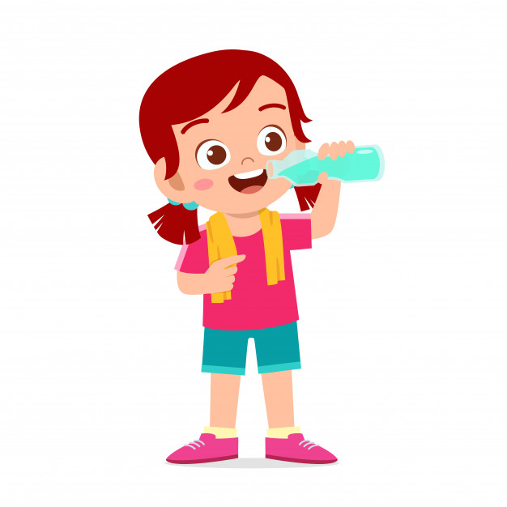

Vale destacar que a quantidade de água a ser ingerida por uma pessoa está relacionada também com as atividadesque ela realiza e com o seu estado de saúde. É válido para pessoas que realizam atividades físicas.
Voltar